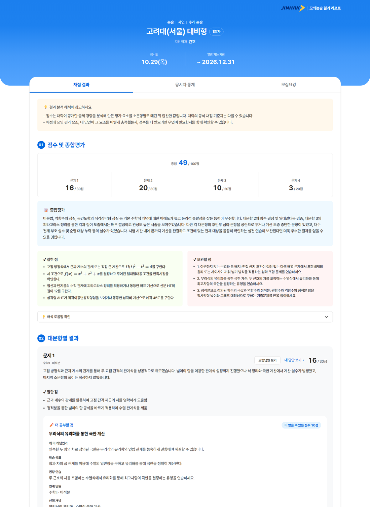
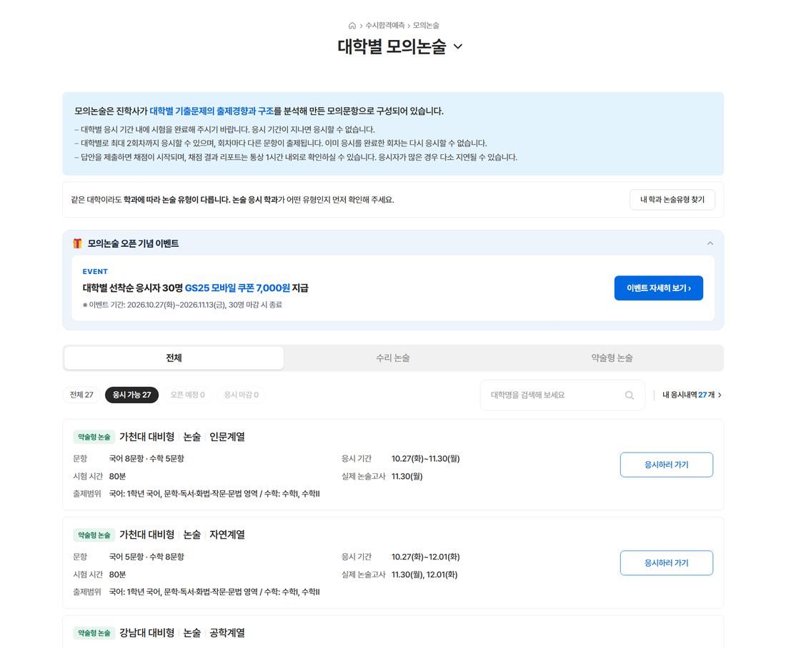
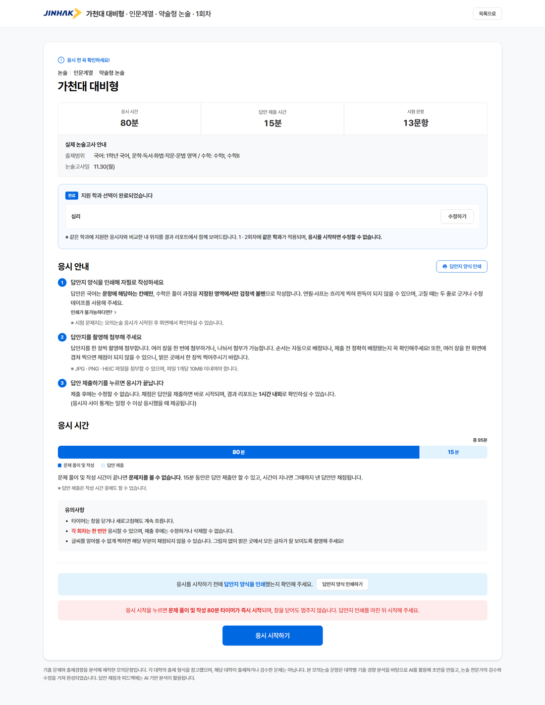

대학별 AI 모의논술 신규 기획 2026.10.27 오픈
학생부 기반 서비스 중단 이후 신규 매출원으로 기획한 논술 서비스의 전체 페이지 기획
대학 선택·구매부터 응시·제출, 결과 리포트까지 이용 흐름 전체를 설계해 착수 약 2개월 만에 오픈

학생부 기반 서비스 중단 이후, 논술로 신규 매출원 확보
교육부 법안 개정으로 학생부 활용이 제한되며 기존 서비스 중단, 고교학점제로 커지는 논술 시장을 겨냥한 신규 서비스
학생부 활용 제한으로 기존 AI 서비스 중단
학생부 AI 진단, 준비 중이던 모의면접 서비스 중단으로 매출 영향
고교학점제로 논술 시장 확대
논술 대비 수요를 고려해 대학별 모의논술 서비스 기획
채점 로직·문항은 데이터파트, 전체 페이지는 기획
PR부터 결과 리포트까지 사용자가 보는 화면 전체 담당
자필 응시를 온라인 서비스 흐름으로 설계
자필 제출 방식, 리포트에 담을 정보, 구매부터 리포트까지의 이용 흐름을 중심으로 기획
자필로 쓴 답안을 온라인으로 제출해야 하는 응시 방식
답안지 인쇄 → 촬영 첨부 → 제출 3단계
작성 방법·촬영 방법·파일 형식까지 응시 전 안내 페이지에 정리
점수만으로는 무엇을 보완할지 알기 어려운 채점 결과
종합평가·잘한 점·보완할 점·더 공부할 것 구성
항목별 AI 채점 구현 가능 여부를 데이터파트와 검토
대학 선택·구매부터 응시·리포트까지 길게 이어지는 이용 흐름
단계마다 다음 행동과 주의사항이 보이도록 화면 연결
PR → 대학 선택·구매 → 응시 전 안내 → 응시·제출 → 리포트
PR부터 결과 리포트까지 전체 페이지 기획
전체 페이지 화면 기획, 리포트 노출 항목을 데이터파트와 협의

1 2
3 4- 유형 확인
지원 학과에 맞는 논술 유형 확인
같은 대학도 학과별 논술 유형이 달라, 응시 전 지원 학과의 유형을 확인하도록 연결
- 탐색
논술 유형과 응시 상태별 목록 구분
수리·약술형 유형과 응시 가능·오픈 예정·마감 상태에 따라 대상 시험 탐색
- 시작 전 확인
시작 후 변경할 수 없는 조건 사전 확인
비교 기준이 되는 지원 학과와 수정 제한을 안내하고, 답안지 인쇄·타이머 시작 조건 재확인
- 시간 구조
풀이 시간과 답안 제출 시간 분리
자필 답안 작성 시간과 촬영·업로드 시간을 구분하고, 시간 종료 시 처리 기준 안내
- 평가 결과
점수와 구체적인 평가 내용 함께 제공
총점·문제별 점수와 종합평가, 답안의 강점·보완점을 연결해 제시
- 학습 연결
보완점을 다음 학습으로 연결
보완 개념별 이유·학습 목표·권장 연습·연계 단원 제공
기획 착수 약 2개월 만에 오픈, 오픈 4일 결제 56건
오픈 4일 기준 초기 지표, 논술 시즌 종료 후 업데이트 예정
- PR·대학 선택·구매·응시 전 안내·응시·제출 전체 페이지 기획
- 환불 규칙 등 이용 정책 정의
- 리포트에서 어떤 정보를 어떤 구조로 보여줄지 정의
- 정의한 항목의 AI 채점 구현 가능 여부를 데이터파트와 검토·조율
- 디자이너·개발(페이지·결제)과 화면·결제 구현 범위 협의, 약 2개월 일정 내 오픈
보여주고 싶은 정보와 AI 채점으로 구현 가능한 범위를 데이터파트와 맞추며 리포트 항목 확정